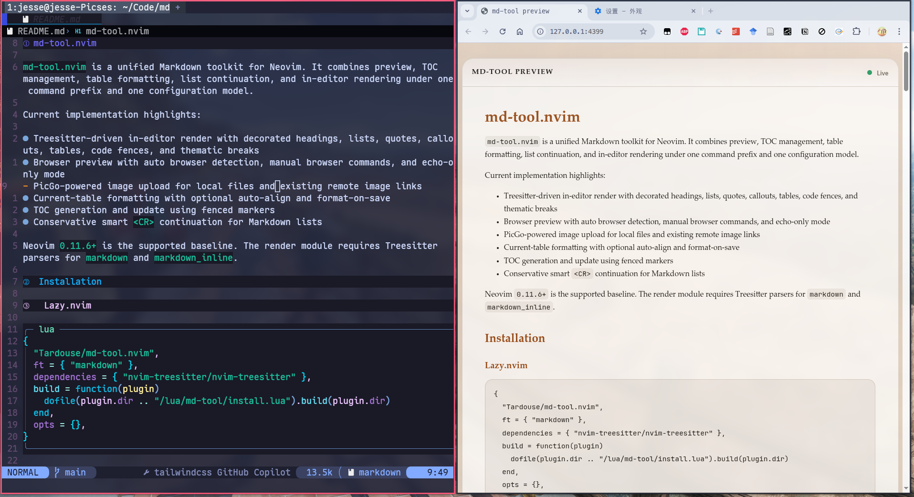

01
Live preview with a local Rust service
Push raw Markdown from Neovim, render it through pulldown-cmark, and keep browser clients in sync over WebSocket updates with scroll synchronization.
md-tool.nvim brings live preview, PicGo image upload, TOC generation, table editing, list continuation, and in-editor Markdown rendering under one command prefix and one configuration model.
For users who are tired of stitching together five plugins just to make Markdown feel complete. Also includes a full Chinese README for setup details and option notes.

md-tool.nvim is opinionated about workflow shape: the features are meant to fit together, not compete with each other. Preview, editing helpers, and rendering all live behind the same mental model.
Push raw Markdown from Neovim, render it through pulldown-cmark, and keep browser clients in sync over WebSocket updates with scroll synchronization.
Run :MDTupload on a Markdown image link, upload through PicGo, and
replace the destination in place without disturbing alt text or titles.
Decorate headings, bullets, task lists, code fences, links, images, callouts, and tables without touching the original Markdown source.
Enable buffer-local table mode when you want it, auto-align the active table, and get practical insert-mode helpers for pipes and row creation.
Continue Markdown lists, task items, and indentation where it makes sense, while deliberately avoiding the noisy behavior that often makes other list plugins tiring.
Generate or update a single TOC block using predictable markers, frontmatter-aware placement, and a command set that behaves consistently.
The plugin is strongest when used as a loop rather than a checkbox list: write in Neovim, preview instantly, upload assets when needed, and keep structure under control without context switching.
Keep the original text readable while enhanced rendering removes visual noise inside Neovim.
The browser mirrors the current buffer through a lightweight local service, including local image paths.
Use PicGo exactly where the Markdown image already exists, instead of jumping to a separate asset pipeline.
Tables, lists, and TOC updates stay close to editing, so maintenance does not become a separate task later.
The default path is intentionally short. Full option commentary lives in the example config and bilingual README files in the repository.
The repository ships minimal and fully annotated examples for lazy.nvim and packer.nvim.
Tagged installs prefer GitHub release assets before falling back to a local Cargo build.
Use an existing PicGo config file or provide the config table directly in plugin setup.
Every module lives under the same MDT prefix, so the plugin reads like a
single tool instead of a bag of unrelated features.
Open, close, and keep a browser mirror in sync.
Format tables and keep list continuation predictable.
Update TOC blocks and upload images without leaving Markdown.
Explore the repository, read the bilingual docs, grab a tagged release, and turn your Markdown setup into one coherent workflow.